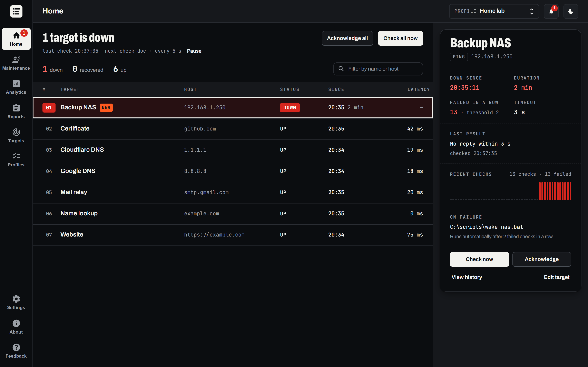
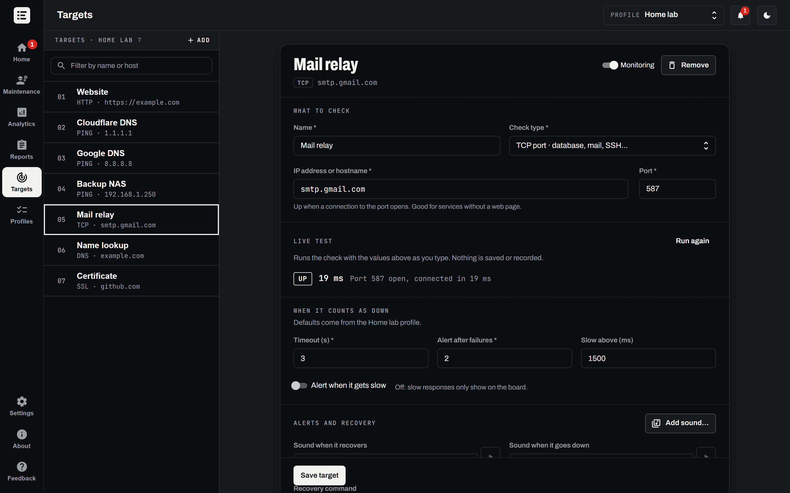
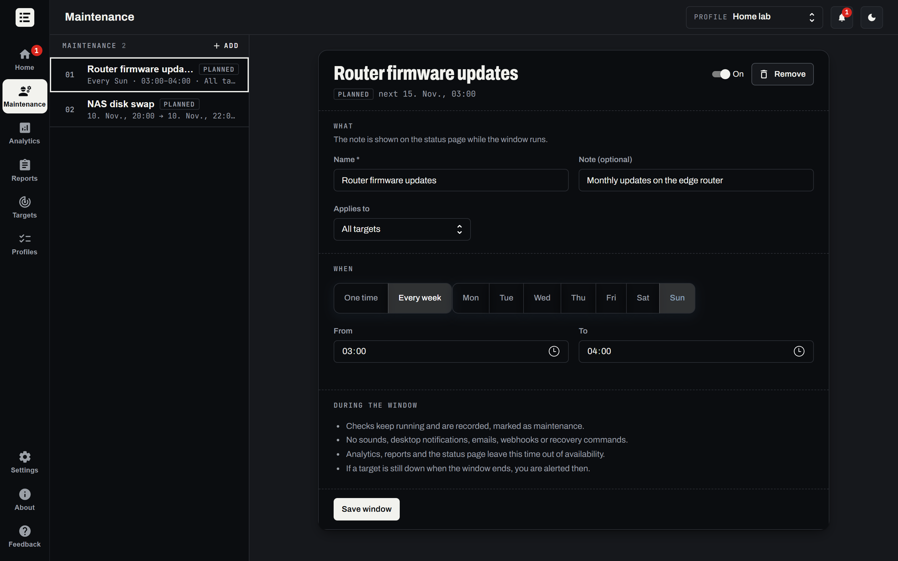
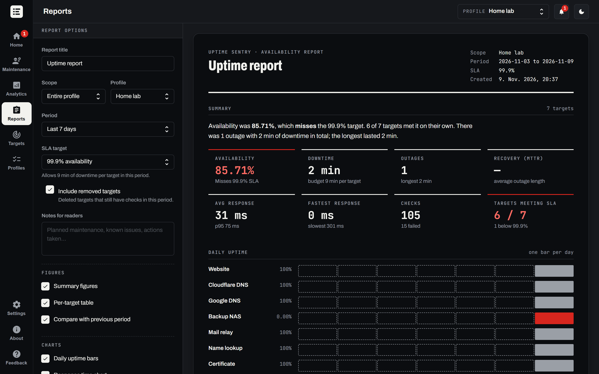
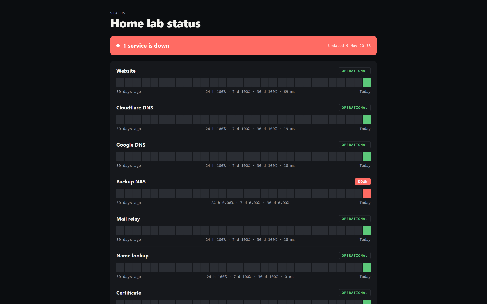
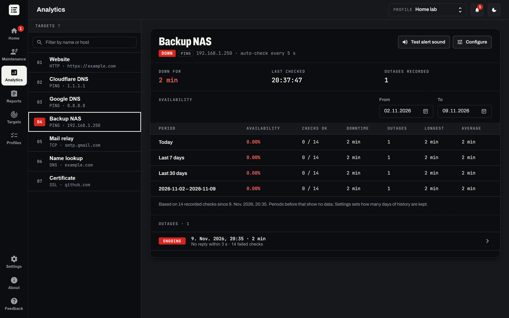
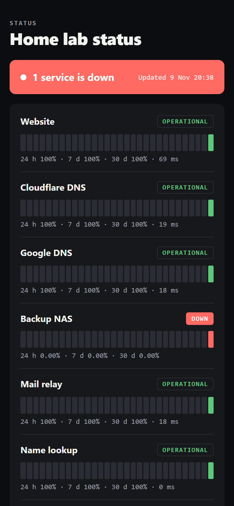

Every service on one board.
Uptime Sentry watches your websites, servers and devices from your own PC.

1. Add what you run
Websites, ping, TCP ports, DNS names and certificates, each tested as you type.

2. Hear it the moment it drops
- A sound and a tray note
- Per target, or your own WAV.
- An email with the cause
- Through your own mail server.
- Webhooks
- Slack, Teams, Discord, ntfy on your phone, or plain JSON.
- A script that fixes it
- A restart after repeated failures.
- Slow counts too
- Replies over your limit, then fast again.
3. Plan the quiet hours
Checks keep running during a window; alerts pause and reports leave the time out.

4. Show how the month went



No account, no cloud, one installer
| System | Windows, with the installer from GitHub Releases |
|---|---|
| Java | Included in the installer; nothing else to set up |
| Account | None, and no cloud service behind it |
| Your data | History and settings stay on this PC; the mail password goes to Windows Credential Manager |
| Network | Only your checks, plus the emails and webhooks you add |

Your board, tonight.
Install it, add a target, and the first check runs within a minute.